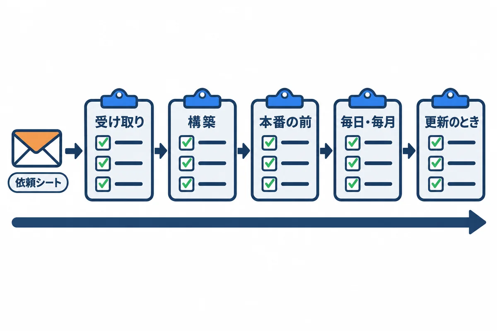

色の付いた枠のコードの、右上の「コピー」ボタンを押してください。コピーしたら、ブラウザーの「戻る」で PDF に戻れます。
構築と運用の場面ごとに、そのまま写して使える文面と表をまとめました。（ ） の所は、自分の会社の値に書きかえます。

| 章 | 使う場面 |
|---|---|
| 1 | 情報システム部門に、サーバーなどを頼むとき |
| 2 | サーバーを受け取ったとき |
| 3 | 構築が終わったとき |
| 4 | 本番を始める前（検証での動作確認） |
| 5 | 毎日・毎月の点検 |
| 6 | 更新（新しい版を入れる）のとき |
| 7 | 年に 1〜2 回（戻す練習・見直し） |
件名: 社内向け業務 Web アプリ用のサーバーと設定のお願い
情報システム部門 ご担当者様
（部署名）の（名前）です。
社内向けの業務 Web アプリを、会社の仮想マシンで動かしたく、
下の「依頼の内容」の準備をお願いできますでしょうか。
・使う人: 社員（社内のパソコンのブラウザから。社外からは使いません）
・始めたい時期: （年月）
・本番と検証を、同じサーバーに置きます
・通信は HTTP（80 番）です（社内で HTTPS を使えないと伺ったため）
ご不明な点や、会社の決まりと合わない所があれば、ご指摘ください。
よろしくお願いいたします。
| # | 項目 | お願いする内容（例） | 決まった値（情報システム部門に書いてもらう） |
|---|---|---|---|
| 1 | 仮想マシン | Windows Server 2025（デスクトップ エクスペリエンス、日本語）。vCPU 4、メモリ 16GB、C ドライブ 100GB、D ドライブ 200GB（04 の 2.2） | |
| 2 | 名前と住所 | サーバーの名前（例：WEBAPP-SV01）、固定の IP アドレス、ドメインへの参加 |
名前: ／ IP: |
| 3 | DNS | webapp.example.local（本番）と webapp-stg.example.local（検証）を、上のサーバーの IP アドレスに向ける |
|
| 4 | ログイン | 自分のアカウント（（ドメイン）\（名前））に、リモート デスクトップでのログインと、構築の間の Administrators の権限 |
|
| 5 | 関所（受信） | 社内のネットワーク（（社内の範囲））から、サーバーの 80 番を通す。管理者のパソコン（（IP））から 3389 番を通す |
|
| 6 | 関所（送信） | サーバーから、Microsoft 365 の受付（（会社のドメイン）.mail.protection.outlook.com）の 25 番を通す。ほかの外向きは不要 |
|
| 7 | メール | Microsoft 365 に、会社の出口の公開 IP アドレスで見分けるコネクタを作る。送り主のアドレス（例：noreply@（会社のドメイン））。SPF に出口の IP を足す（04 の 10 章） |
送り主: |
| 8 | 出口の IP | 会社のインターネットの出口の IP アドレスが固定で、ほかの会社と共有していないか | |
| 9 | 控えの置き場所 | 毎晩の控えを写す共有フォルダ（例：\\（ファイルサーバー）\backup\webapp）。サーバーのコンピューター アカウント（（ドメイン）\WEBAPP-SV01$）に書き込みの許可 |
場所: |
| 10 | Windows Update | 更新の配り方と、再起動してよい時間帯（毎晩 2:00 のバックアップと毎朝 8:00 の処理を避けたい） | 時間帯: |
| 11 | ウイルス対策 | 会社の決まりのソフト。データベースのフォルダ（D:\pgsql）を調べる対象から外せるか |
|
| 12 | 時刻 | 時刻の合わせ先（ドメインの決まりどおりでよいか） | |
| 13 | 仮想マシンの控え | 仮想マシンごとの控え（バックアップ）の仕組みがあれば、対象に入れてほしい | |
| 14 | 監視 | 会社の監視の仕組みがあれば、http://webapp.example.local/health を見てほしい |
9 の「コンピューター アカウント」について: 毎晩のバックアップは、サーバーの
SYSTEMのアカウントで動きます。SYSTEMがほかのサーバーの共有フォルダに書くときは、サーバー自身の名前（WEBAPP-SV01$）として書きます。だから、共有フォルダの許可は、この名前に付けてもらいます。
| # | 確かめること | 確かめ方 | 結果 |
|---|---|---|---|
| 1 | リモート デスクトップで入れる | 01 の 1.3 | ☐ |
| 2 | コンピューター名・ドメインが頼んだとおり | hostname、サーバー マネージャーの「ローカル サーバー」 |
☐ |
| 3 | OS の版 | (Get-CimInstance Win32_OperatingSystem).Caption |
☐ |
| 4 | vCPU・メモリ | (Get-CimInstance Win32_ComputerSystem).NumberOfLogicalProcessors、タスク マネージャー |
☐ |
| 5 | C・D ドライブの大きさ | Get-Volume |
☐ |
| 6 | 固定の IP アドレス | Get-NetIPConfiguration |
☐ |
| 7 | 名前が引ける | 社員のパソコンで Resolve-DnsName webapp.example.local |
☐ |
| 8 | 時間帯が日本時間 | Get-TimeZone（Tokyo Standard Time） |
☐ |
| 9 | 時刻が合っている | w32tm /query /status |
☐ |
| 10 | Administrators に入っている | whoami /groups |
☐ |
| 11 | ファイアウォールが有効・ドメインのプロファイル | 01 の 10.1 | ☐ |
| 12 | Windows Update が当たっている | Get-HotFix |
☐ |
| # | 確かめること | 確かめ方 | 結果 |
|---|---|---|---|
| 1 | PostgreSQL が 127.0.0.1 と ::1 だけで待ち受け |
Get-NetTCPConnection -State Listen -LocalPort 5432 |
☐ |
| 2 | lc_messages = 'C'・時間帯が Asia/Tokyo |
psql で SHOW lc_messages; SHOW timezone; |
☐ |
| 3 | 検証のユーザーで本番の DB につなげない | 04 の 5.6 | ☐ |
| 4 | アプリのサービスが仮想アカウントで動いている | Get-CimInstance Win32_Service -Filter "Name like 'webapp%'" の StartName |
☐ |
| 5 | アプリが 127.0.0.1 だけで待ち受け |
Get-NetTCPConnection -State Listen -LocalPort 8080,8081 |
☐ |
| 6 | パスワードの書かれた XML・pgpass を、ほかの人が読めない | icacls（04 の 7.4・11.2） |
☐ |
| 7 | IIS の preserveHostHeader が true |
04 の 8.3 | ☐ |
| 8 | 社員のパソコンから、本番と検証の両方が開ける | ブラウザ | ☐ |
| 9 | サーバーの関所: 80 は社内から、3389 は管理者のパソコンから、だけ | Get-NetFirewallRule -DisplayName "webapp*" |
☐ |
| 10 | 社員のパソコンから、5432・8080・8081 につながらない | Test-NetConnection webapp.example.local -Port 5432 が False |
☐ |
| 11 | テストのメールが受信トレイに届く | 04 の 10.3 | ☐ |
| 12 | 毎晩のバックアップのタスクが成功する | Start-ScheduledTask の後、LastTaskResult が 0 |
☐ |
| 13 | .ps1 が全部「UTF-8 (BOM 付き)」 |
01 の 3.7 のコマンドで 239 187 191 |
☐ |
| 14 | 控えから、別の DB に戻せる | 04 の 11.5 | ☐ |
| 15 | check.ps1 が全部 OK |
06 の 2.1 | ☐ |
| 16 | （Django 版）check --deploy が no issues (4 silenced)・DEBUG が False |
05 の 8.3・14 章 | ☐ |
検証環境で、実際の使い方に沿って確かめます。
| # | 確かめること | 結果 |
|---|---|---|
| 1 | ログインできる。間違ったパスワードでは入れない | ☐ |
| 2 | 60 分操作しないと、ログアウトされる | ☐ |
| 3 | 依頼を登録・保存・一覧で見られる | ☐ |
| 4 | 大きめの図面（5MB に近い物）を保存できる | ☐ |
| 5 | 添付ファイル（JPG・PNG・PDF、10MB に近い物）を保存し、開ける | ☐ |
| 6 | 承認のお願いのメールが、決まった宛先だけに届く（検証の宛先の書きかえ） | ☐ |
| 7 | メールの中の URL が、検証の名前になっている | ☐ |
| 8 | 権限の無い人には、設定の画面が開けない | ☐ |
| 9 | 毎朝 8:00 の処理が動き、メールが届く（時刻を待つか、手で動かす） | ☐ |
| 10 | 社員データの CSV を取り込め、日本語が化けない | ☐ |
| 11 | アプリのサービスを止めると、ブラウザに 502 が出て、始めると戻る | ☐ |
| 12 | サーバーを再起動しても、全部のサービスが自動で戻る | ☐ |
| 13 | 本番の名前・ポート・DB・メールの宛先が、本番の値になっている（XML を見比べる） | ☐ |
| 14 | 本番の最初の管理者と、社員データの取り込みの段取り | ☐ |
| 15 | 社員への案内（URL、パスワードを使い回さないこと、問い合わせ先） | ☐ |
| 頻度 | 確かめること | 確かめ方 |
|---|---|---|
| 毎日 | 全部 OK か | check.ps1（06 の 2.1） |
| 毎日 | 前の晩のバックアップが成功 | D:\webapp\backup\logs\ の最後の行に OK: |
| 毎日 | アプリのログに、見慣れないエラーが増えていない | Select-String -Path D:\webapp\prod\logs\*.log -Pattern "ERROR" |
| 毎週 | ディスクの空きの減り方 | Get-Volume。先週と比べる |
| 毎月 | Windows Update が当たり、再起動の後に全部戻った | Get-HotFix、check.ps1 |
| 毎月 | PostgreSQL の新しい修正版が出ていないか | PostgreSQL の公式のお知らせ |
| 毎月 | アプリの部品の安全の修正 | Rust 版: cargo audit など（開発用のパソコン）。Django 版: 05 の 14 章 |
| 毎月 | Administrators・Remote Desktop Users に、知らない人がいない | Get-LocalGroupMember（01 の 4.2） |
| 毎月 | 本番の DB の大きさ | 02 の 12 章 |
| 毎月 | 別の場所の控えが増えている（写せている） | 共有フォルダを見る |
| # | 確かめること | 結果 |
|---|---|---|
| 1 | 新しい版で何が変わるか（マイグレーションがあるか）を、アプリの作者に確かめた | ☐ |
| 2 | zip のハッシュ値が、開発用のパソコンで控えた値と同じ | ☐ |
| 3 | 検証で更新し、4 章の主な項目を確かめた | ☐ |
| 4 | 本番の更新の時間を、社員に知らせた | ☐ |
| 5 | 本番の更新の直前に、データベースの控えを取った | ☐ |
| 6 | 切り戻しの手順と、「何を確かめて、だめなら戻すか」を決めた | ☐ |
| 7 | 本番で更新し、check.ps1 が全部 OK |
☐ |
| 8 | 社員の画面で、主な操作ができる | ☐ |
| 9 | 古い版（app_prev など）を、次の更新まで残してある |
☐ |
| 10 | 更新の記録（日時・版・した人・結果）を残した | ☐ |
| すること | なぜ | 手順 |
|---|---|---|
| 控えから戻す練習 | いざというときに戻せないと、控えの意味が無い | 04 の 11.5 |
| 別の場所の控えから戻す練習 | サーバーが丸ごと壊れたときのため | 共有フォルダの控えを使って、04 の 11.5 |
| サポートの期限の見直し | 期限が切れると安全の修正が出ない | 03 の 3 章、Python・Django・PostgreSQL の期限 |
| ディスクの見積もりの見直し | 足りなくなる前に頼む | 00 基礎知識 0.2 |
| 手順書の見直し | 版や画面が変わる | この資料一式 |
| 権限の棚卸し | 異動した人の権限が残らないように | アプリの権限、サーバーの Administrators |
| （HTTPS の見直し） | 社内で証明書を使えるようになっていないか | 参考資料「HTTPS にする場合」 |